Aplicando Álgebra Booleana
Reducción de ecuacion y generación de circuito y tabla de verdad
Ejercicio 1
Simplifique la expresión, comprobar tabla de verdad y crear su circuito digital
| Ecuación |
|---|
Desarrollo
Simplificando la expresión, la ecuación es:
Factorizamos las variables comunes \(A\overline{B}\). Nos queda para reducir la \(D\) con su complemento \(\overline{D}\), y aplicamos la fórmula, nos da como resultado:
| Pasos | Operación |
|---|---|
| 1 | Se reduce \(D + \overline{D} = 1\) |
| 2 | |
| 3 | Se multiplica el resultadode la reducción con el factor resultante |
| 4 | |
| 5 | Resolvemos la multiplicación y nos queda: |
| 6 |
Resultado
Crear el circuito de la ecuación reducida:
| Ecuación | Tabla de verdad |
|---|---|
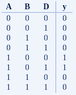 |
Circuito
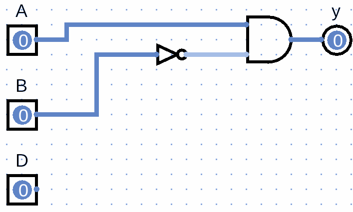
Ejercicio 2
Simplifique la expresión, comprobar tabla de verdad y crear su circuito digital
| Ecuación |
|---|
Desarrollo
| Pasos | Operación |
|---|---|
| 1 | |
| 2 | Realizamos la multiplicación: |
| 3 | |
| 4 | Ahora podemos aplicar los teoremas siguientes: |
| 5 | Sustituimos en la ecuación: |
| 6 | |
| Reducimos y nos queda: | |
| Factorizamos a B | |
| Nos da como resultado: | |
| Ecuación | Tabla de verdad |
|---|---|
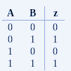 |
Circuito
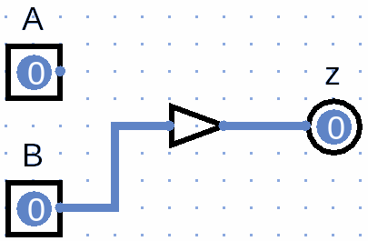
Ejercicio 3
Simplifique la expresión, comprobar tabla de verdad y crear su circuito digital:
| Ecuación |
|---|
Desarrollo
| Pasos | Operación |
|---|---|
| 1 | Simplificando la expresión, la ecuación es: |
| 2 |  |
| 3 | Si factorizamos las variables comunes \(CD\), tenemos que |
| 4 | 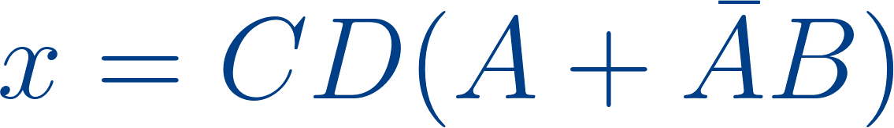 |
| 5 | Utilizando el teorema podemos sustituir |
| 6 | Quedándonos: |
| 7 | 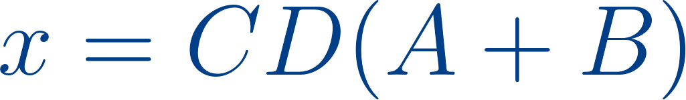 |
| 8 | Volvemos a multiplicar todo, para el resultado final |
| 9 |
| Ecuación | Tabla de verdad |
|---|---|
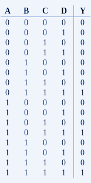 |
Circuito
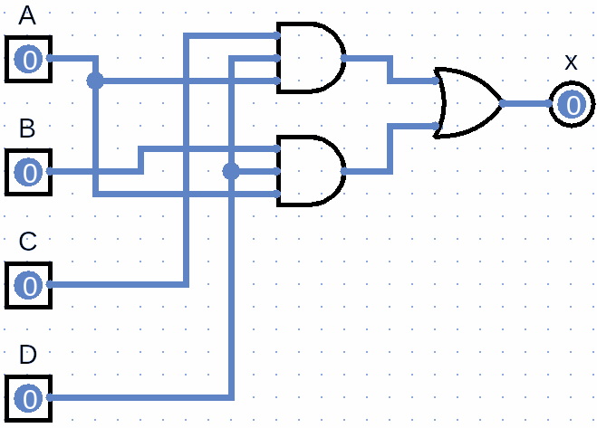
A partir de circuito generar ecuación y reducción
Ejercicio 4
Con base al circuito, generar la ecuación, reducirla y obtener tabla de verdad
| Circuito inicial |
|---|
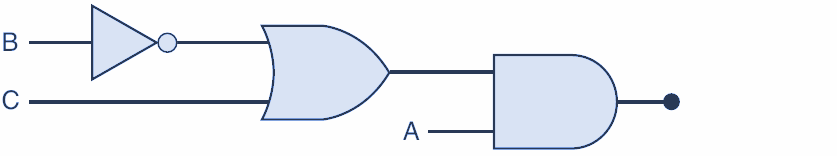 |
Desarrollo
Vamos asignando los valores por cada compuerta y su salida
| Pasos | Operación |
|---|---|
| 1 | Inicio |
| 2 | 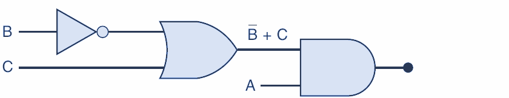 |
| 3 | Nos da como resultado: |
| 4 | 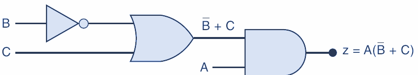 |
| 5 | Nos da como resultado la ecuación booleana |
| 6 |
| Ecuación | Tabla de verdad |
|---|---|
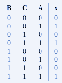 |
Circuito
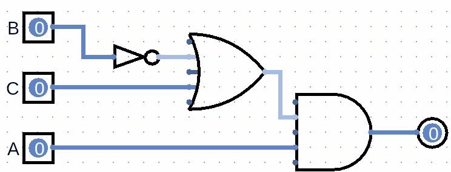
Ejercicio 5
Con base al circuito, generar la ecuación, reducirla y obtener tabla de verdad
| Circuito inicial |
|---|
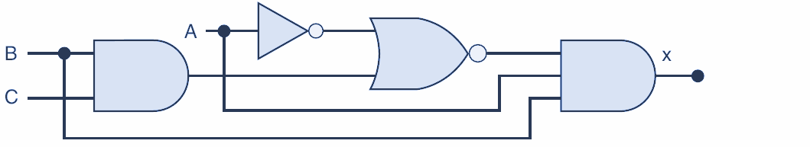 |
Desarrollo
| Pasos | Operación |
|---|---|
| 1 | Vamos asignando los valores por cada compuerta y su salida |
| 2 | 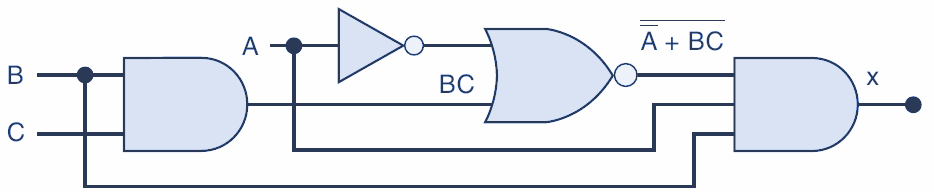 |
| 3 | Nos da como resultado: |
| 4 | 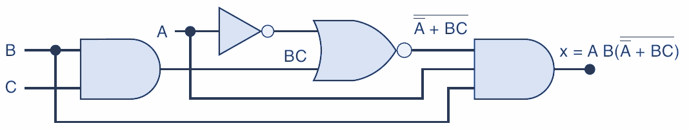 |
| 5 | La función obtenida fue: |
| 6 | 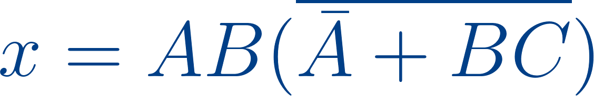 |
| 7 | Para simplificar, aplicaremos Teorema de Morgan en las negaciones |
| 8 | Con esto aplicamos para que la suma se convierta en multiplicación: |
| 9 | Nos queda de la siguiente manera al aplicar el teorema de Morgan |
| 10 | |
| 11 | Ahora, aplicamos el teorema para |
| 12 | Con esto la ecuación nos queda: |
| 13 | |
| 14 | Volvemos a aplicar teorema de Morgan: |
| 15 | 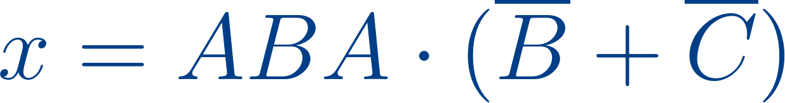 |
| 16 | Aplicamos el teorema |
| 17 | |
| 18 | Con esto la ecuación se reduce |
| 19 | 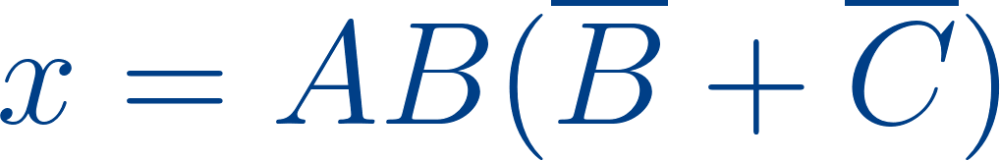 |
| 20 | Se reduce, quedando: |
| 21 | |
| 22 | Aplicamos el teorema |
| 23 | Multiplicamos los factores |
| 24 | Para llegar al resultado final: |
| 25 |
| Ecuación Reducida | Tabla de verdad |
|---|---|
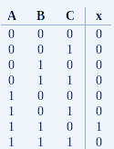 |
Circuito
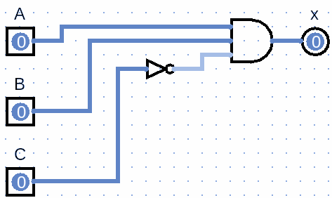
Ejercicio 6
Con base al circuito, generar la ecuación, reducirla y obtener tabla de verdad
| Circuito inicial |
|---|
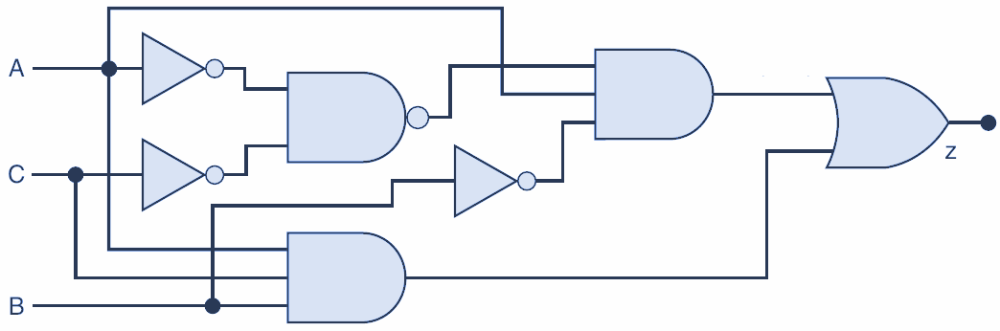 |
Desarrollo
Vamos asignando los valores por cada compuerta y su salida
| Pasos | Operación |
|---|---|
| 1 | Inicio |
| 2 | 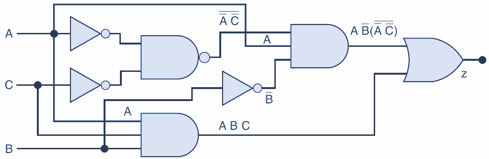 |
| 3 | Nos dá como resultado: |
| 4 | 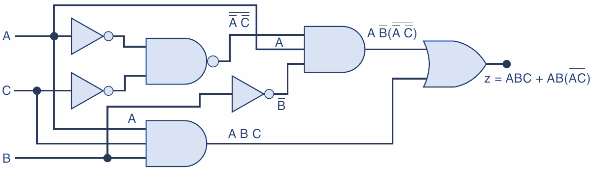 |
| 5 | La función resultante fue: |
| 6 | 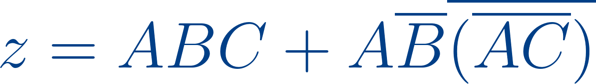 |
| 7 | Aplicamos el teorema de Morgan: \(\overline{XY} = \overline{X}+\overline{Y}\) |
| 8 | 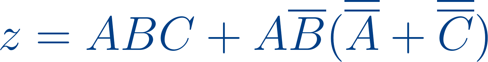 |
| 9 | Se reduce \(\overline{\overline{A}}=A\). Cancelamos los inversos en \(A\) y \(C\) |
| 10 | |
| 11 | Multiplicamos los factores: |
| 12 | |
| 13 | Reduzimos \(A \times A = A\). Nos queda: |
| 14 | |
| 15 | Fatorizamos \(AC\). |
| 16 | |
| 17 | Reduzimos las B complementarias: |
| 18 | |
| 19 | Nos queda: |
| 20 | |
| 21 | Aún podemos factorizar para que nos quede: |
| 22 |
| Ecuación Reducida | Tabla de verdad |
|---|---|
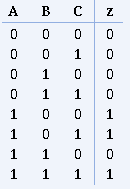 |
Circuito
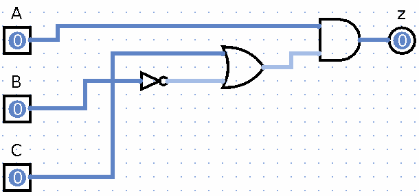
A partir de Tabla de verdad generar ecuación y reducción
Ejercicio 7
Con base a la tabla de verdad, obtener ecuación, reducir ecuación, y construir el circuito digital
| Tabla inicial |
|---|
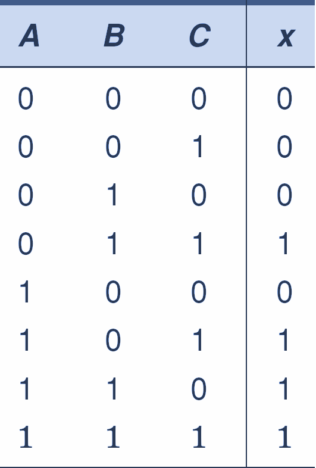 |
Desarrollo
| Pasos | Operación |
|---|---|
| 1 | Primero se debe obtener los valores de las salidas que sean 1 |
| 2 | 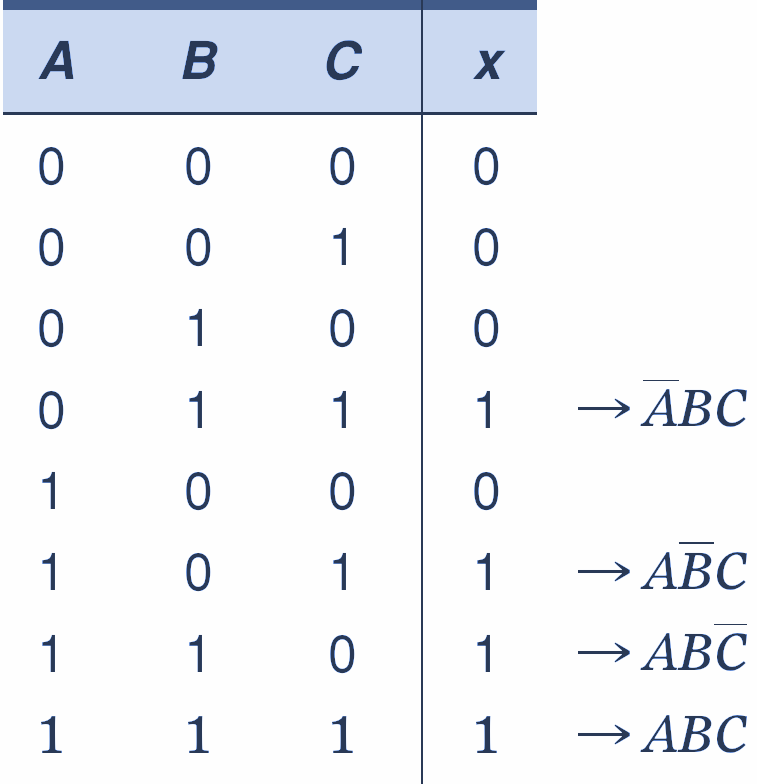 |
| 3 | Una vez tenemos las salidas en 1, se genera la ecuación sumando cada producto: |
| 4 | |
| 5 | Ahora debemos reducir la ecuación, para esto vamos a aplicar el teorema \(x + x = x\) , con \(ABC\) ; duplicamos para reducir más fácil la ecuación: |
| 6 | |
| 7 | Factorizamos los términos: |
| 8 | |
| 9 | Hacemos las reducciones necesarias y llegamos a la resultante |
| 10 |
| Ecuación Reducida | Tabla de verdad |
|---|---|
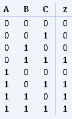 |
Circuito
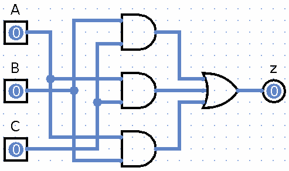
Ejercicio 8
Con base a la tabla de verdad, obtener ecuación, reducir ecuación, y construir el circuito digital
| Tabla inicial |
|---|
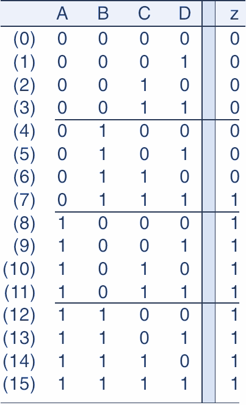 |
Desarrollo
| Pasos | Operación |
|---|---|
| 1 | Con base a la tabla de verdad, obtener ecuación, reducir ecuación, y construir el circuito digital |
| 2 | Primero se debe obtener los valores de las salidas que sean 1: |
| 3 | 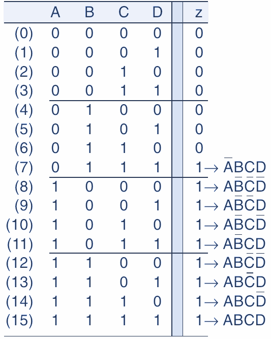 |
| 4 | La ecuación generada es: |
| 5 | |
| 6 | Creamos el circuito original con base la ecuación sin reducción |
| 7 | 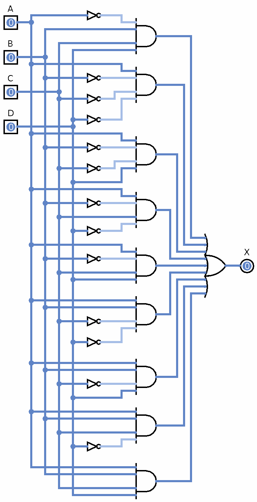 |
| 8 | Retomando la ecuacion obtenida |
| 9 | |
| 10 | Vamos a factorizar los complementos en \(D\) |
| 11 | |
| 12 | La ecuación reducida nos queda: |
| 13 | |
| 14 | Volvemos factorizar los complementos de \(C\): |
| 15 | |
| 16 | La ecuación reducida nos queda: |
| 17 | |
| 18 | Factorizamos \(A\) |
| 19 | |
| 20 | Aplicamos el complemento en \(B\) |
| 21 | |
| 22 | Aún podemos reducir más, aplicando el Teorama \(x + \overline{x}y = x + y\). En este caso \(x = A\) y \(y = BCD,\) nos queda: |
| 23 |
Ecuación raw
( ~A B C D) + (A ~B ~C ~D ) + (A ~B ~C D ) + (A ~B C ~ D) + (A ~B C D) + (A B ~C ~D) + (A B ~C D ) + ( A B C ~D) + (A B C D)
| Ecuación Reducida | Tabla de verdad |
|---|---|
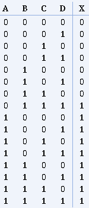 |
Circuito
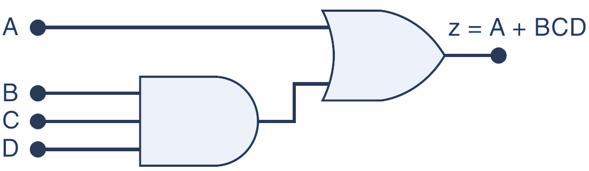
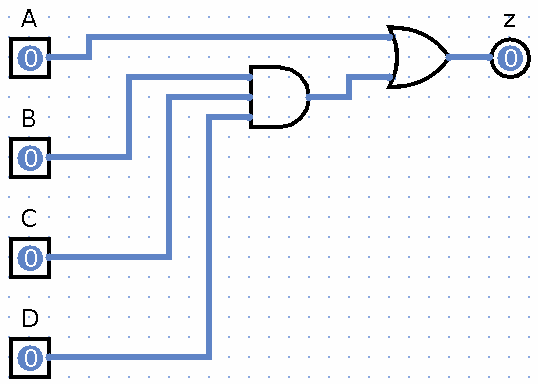
Ejercicio 9
Con base a la tabla de verdad, obtener ecuación, reducir ecuación, y construir el circuito digital
| Tabla inicial |
|---|
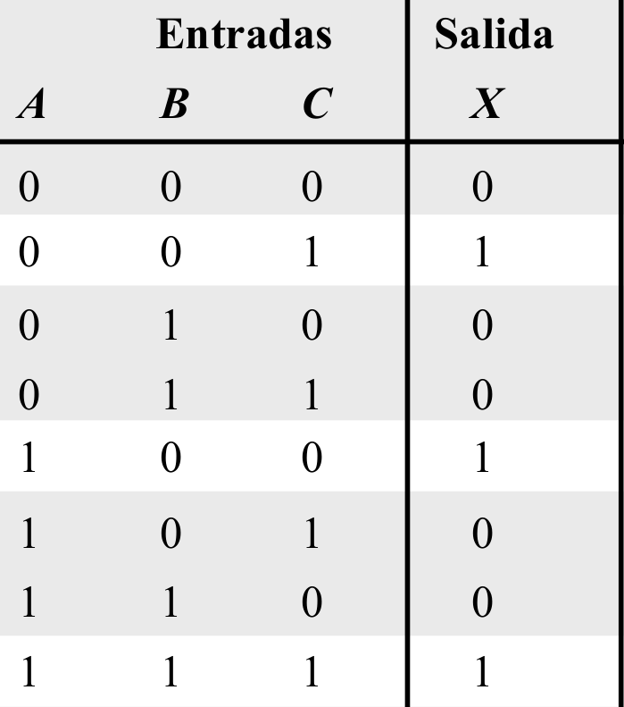 |
Desarrollo
| Pasos | Operación |
|---|---|
| 1 | Se identifican las salidas que tienen uno |
| 2 | 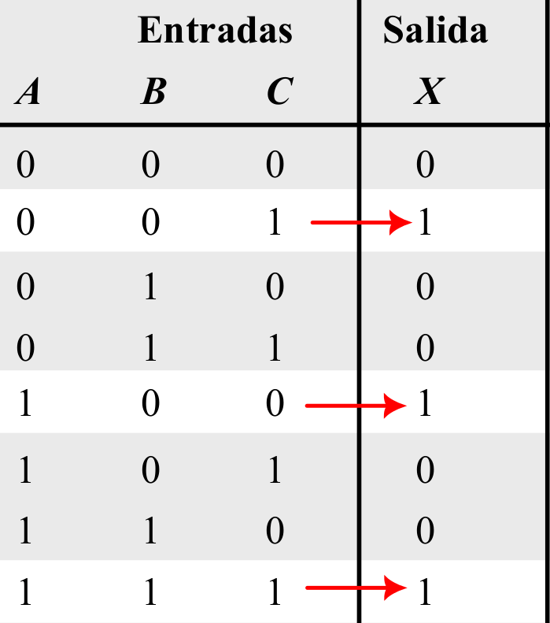 |
| 3 | La ecuación que se obtiene es |
| 4 | \(\color{blue}{\overline{AB}C+A\overline{BC} + \overline{ABC}}\) |
| 5 | Analizandola y viendo con detenimiento, no tiene reducción |
Atención
No todas las tablas o ecuaciones tienen reducción
Ecuación Raw
~A ~B C + A ~B ~C + A B C
| Ecuación Reducida | Tabla de verdad |
|---|---|
| \(\color{blue}{X=\overline{AB}C+A\overline{BC} + \overline{ABC}}\) | 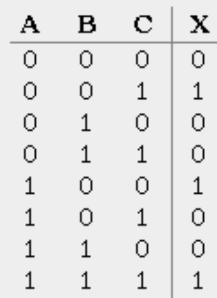 |
Circuito
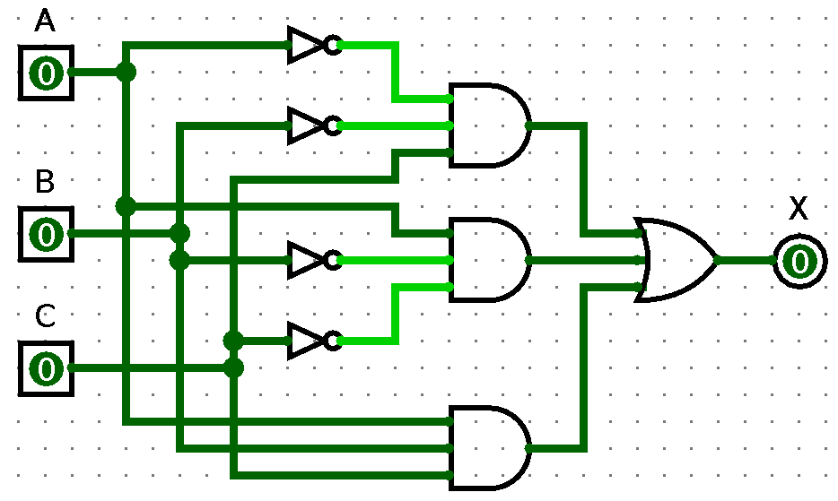
Ejercicio 10
Con base a la tabla de verdad, obtener ecuación, reducir ecuación, y construir el circuito digital
| Tabla inicial |
|---|
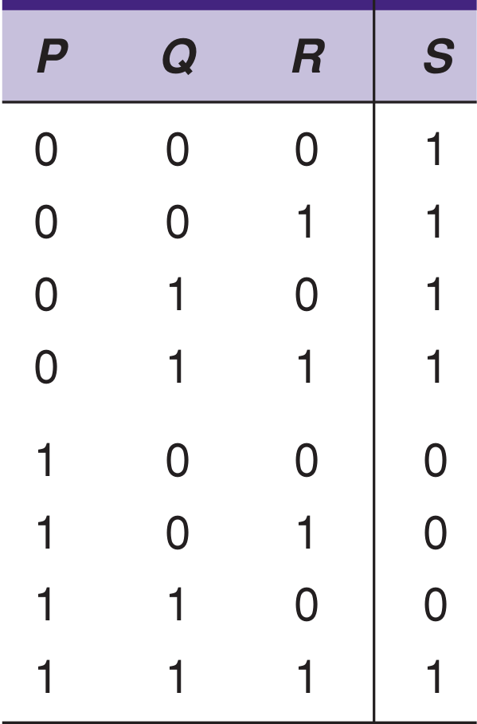 |